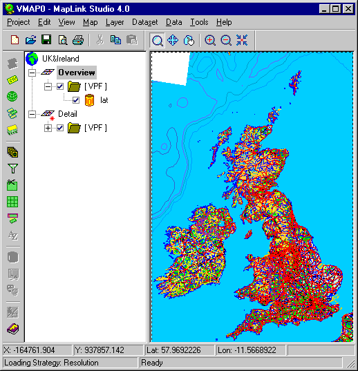

A sample MapLink Pro Studio project, configured for use with VMAP0 data, is supplied in the MapLink Pro \projects directory.
 To load the sample VMAP0 project
To load the sample VMAP0 project
- Place the VMAP0 EURNASIA CD in your CD-ROM drive.
- Open the VMAP0 project file using Project | Open, navigating to the MapLink Pro\projects directory and selecting VMAP0.mlp. This project file contains two layers, each covering the UK and Ireland, one at an overview level and the other with full detail.
- If automatic data loading is currently enabled, the Overview layer will be processed automatically. If automatic data loading is not enabled, click on either layer (Overview or Detail) and then select Layer | Reload to process the layer.
Note that processing the layer may take some time, as the VMAP0 data for the UK and Ireland is quite extensive.
The Overview layer will appear as shown below, when processing has finished.
The main features of the configuration for this project file are as follows:
- The map coordinate system has been set up as an extended version of the British National Grid, which uses a Transverse Mercator projection. The settings are to be found under Map | Output Coordinate System… (the false Easting and false Northing are set on the Linear Transformation panel).
- The VMAP0 data extracted from CD is restricted in range between 49° and 62° in latitude, and between –15° and 4° in longitude. This setting is found under Dataset | Input Clipping…
- The map display area is set using output clipping (via Layer | Output Clipping…). In this project file, both layers are clipped to the same area. The blank area in the upper left corner of the map display appears because this area is outside the coverage of the EURNASIA VMAP0 dataset.
- The feature configuration is defined at the dataset level, and is set to the same values for each layer. It is generally advisable to use the FACC code as the first level of feature subclassing wherever this attribute is provided. The settings may be found under Dataset | Format Configuration, in the Feature Configuration list.
- Various options are used in order to optimise the size of the output map and thereby its run-time performance:
- Feature masking and filtering are applied to the Overview layer. Feature masking removes certain features entirely from the layer (such as point features, which would not be visible at the overview level. Filtering removes points from lines in the map data according to user-selectable strategies. In this case, simple Line Delta filtering has been applied, to constrain the lengths of individual line segments to be between 500m and 3 km. Filtering settings may be found under Layer | Filtering.
- Both layers are optimised for speed at run-time by using the Batch Primitives option. This option is suitable in applications where the individual map primitives do not have to be manipulated at run-time. This setting is applied using Layer | Optimisation.
- Layer management in the generated map is set using Map | Layer Loading… A resolution-based loading strategy is defined, with the Detail layer being displayed once the scale of the map reaches XXX per pixel.
- To generate the output map for this project, use Map | Create Output Map…
To use the sample VMAP0 project as a basis for a new project
- Place any VMAP0 CD in your CD-ROM drive.
- Open the VMAP0 project file using Project | Open, navigating to the MapLink \projects directory and selecting VMAP0.mlp.
- Save the project as a new file, using Project | Save As…
- For each layer in the new project, modify the geographical extent of the data to be read from the VMAP0 CD by selecting the appropriate dataset and then using Dataset | Input Clipping… Enter the minimum and maximum longitude in the Minimum X and Maximum X fields respectively; enter the minimum and maximum latitude in the Minimum Y and Maximum Y fields respectively. Longitudes West of the Greenwich Meridian should be entered as negative values.
- Modify the feature configuration settings if desired by selecting the appropriate dataset and then using Dataset | Format Configuration…
- Process the layers when required using Layer | Reload.
To create a new VMAP0 project
- Place any VMAP0 CD in your CD-ROM drive.
- Create a new project using Project | New, add a layer to the project using Map | Add Layer, then add a VPF dataset using Layer | Add Dataset. Select VPF from the list of dataset types, and select or create a new Feature Book section. Note that the predefined VMAP0 Feature Book sections are designed to be used with the format configuration that has been set up in the sample VMAP0 project. If a different feature configuration is created, then the Feature Book settings will have to be modified accordingly.
- Add VMAP0 data to the VPF dataset using Dataset | Add Data. Navigate to the CD-ROM drive and select the lat file that should be present in the root directory of the CD.
- Select Dataset | Format Configuration… and select the appropriate library. Each VMAP0 CD contains two libraries, one of which is named Rference and the other which has the same name as the CD, for example Eurnasia. Select this latter library.
- Modify the feature configuration information, if desired, at this stage.
- Select Dataset | Input Clipping and define the geographical extent of the data to be read from the VMAP0 CD, as described above
- Process the layers when required using Layer | Reload.
Note that if you forget to select the correct library, the layer will process very quickly but the resulting layer will appear empty since the Rference library contains no geometric data.
Note also that if you forget to limit the geographical extent of the data to be read from the VMAP0 CD, MapLink will attempt to load all the data from the VMAP0 CD. This will take a long time, and you may not have enough memory on your computer for it to be successful. You can press Cancel at any stage to stop the processing in this case.
Copyright © 1998 to 2025 by Envitia Group PLC.